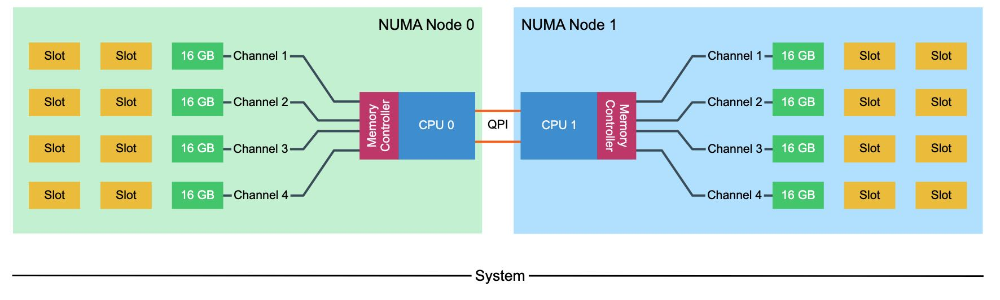
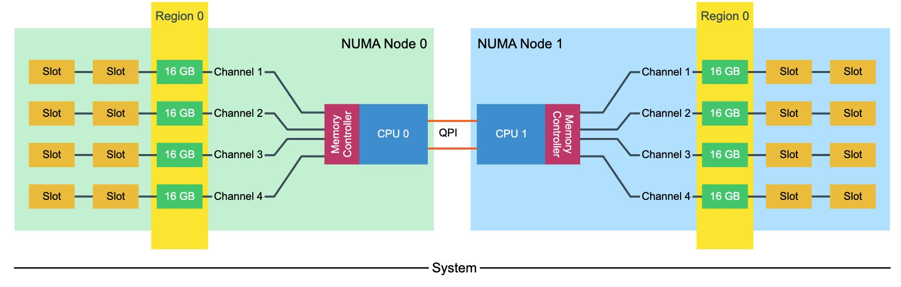
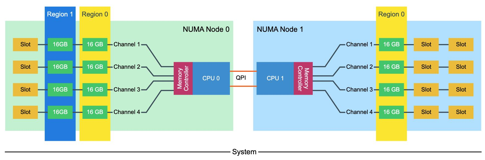
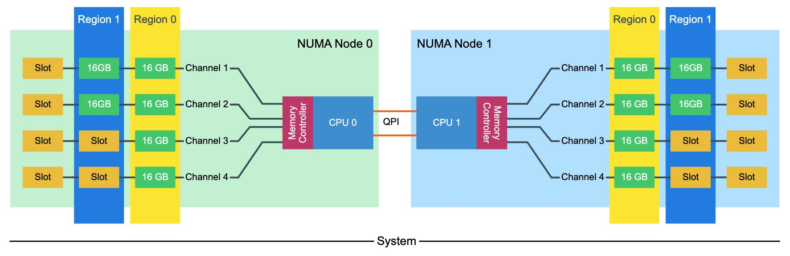
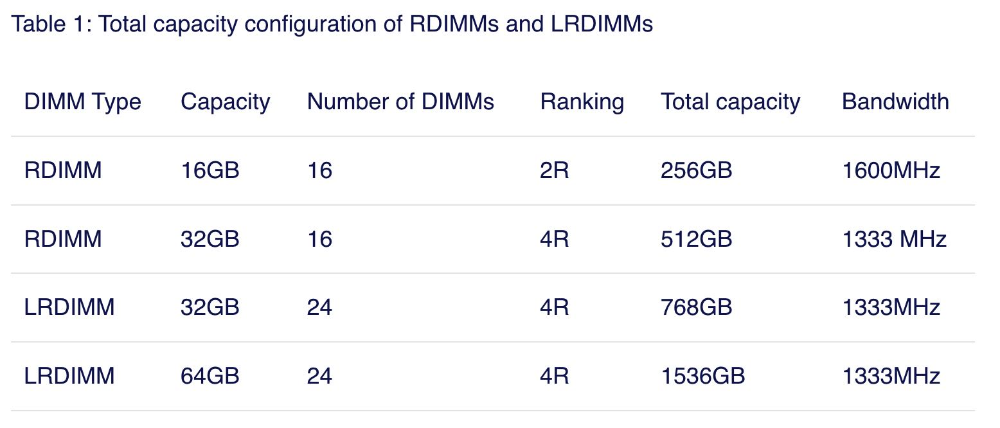

NUMA DEEP DIVE PART 4: LOCAL MEMORY OPTIMIZATION
https://frankdenneman.nl/2016/07/13/numa-deep-dive-4-local-memory-optimization/
本地内存优化，这节主要是讲怎么从硬件上优化，而不是软件上的。
Intel Xeon架构下面会有1-2个memory controller, 每个memory controller可以连接4个channel(quad-channel mode). 每个Channel上可以连接2-3个DIMM（下图中的Slot，下图中有3个DIMM, 只使用了其中一个DIMM）。channel不用全部使用，可以使用其中的2-3个。因为channel是独占的，所以CPU在内存布局上也会尽可能地interleave到多个channel上面，来提升内存带宽上限。

The Intel Xeon microarchitecture contains one or two integrated memory controllers. The memory controller connects through a channel to the DIMMs. Sandy Bridge (v1) introduced quadruple memory channels. These multiple independent channels increase data transfer rates due to concurrent access of multiple DIMMs. When operating in quad-channel mode, latency is reduced due to interleaving. The memory controller distributes the data amongst the DIMM in an alternating pattern, allowing the memory controller to access each DIMM for smaller bits of data instead of accessing a single DIMM for the entire chunk of data. This provides the memory controller more bandwidth for accessing the same amount of data across channels instead of traversing a single channel storing all data into a single DIMM. In total, there are four memory channels per processor, each channel connect up to three DIMM slots. Within a 2 CPU system, eight channels are present, connecting the CPUs to a maximum of 24 DIMMs.
Quad-channel mode is activated when four identical DIMMs are put in quad-channel slots. When three identical DIMMs are used in Quad-channel CPU architectures, triple-channel is activated, when two identical DIMMs are used, the system will operate in dual-channel mode.
Please note that interleaving memory across channels is not the same as the Node Interleaving setting of the BIOS. When enabling Node Interleaving the system breaks down the entire memory range of both CPUs into a single memory address space consisting 4KB addressable regions and maps them in a round robin fashion from each node (more info can be found in part 1 (http://frankdenneman.nl/2016/07/07/numa-deep-dive-part-1-uma-numa/)). Channel interleaving is done within a NUMA node itself.
为了更好地理解channel interleaving, 我们将channel下面对应的DIMM划分成为一个Region. 在部署上应该尽可能地使：一个NUMA nodes Region分布一致，两个NUMA nodes上Region分布一致。

下面两种配置方式都会出现问题，第一种出现的问题就是一边NUMA node的内存小导致经常会跨节点访问，另外一种出现的问题就是前面两个channel使用概率高于后面两个。这样看上去，这里多出来的4个16GB DIMM，似乎可以选择3 channel/2 DPC的部署方式。另外，channel上面DIMM越多，虽然容量也越大，但是memory controller overhead也会更高，限制带宽上限。


The memory capacity is equally distributed across the NUMA Nodes, both nodes contain 96 GB of RAM. The CPUs create two regions, region 0 (64GB) interleaves across four channels, region 1 (32GB) interleaves across 2 channels. Native DIMM speed remains the same (MHz). However, some performance loss occurs due to control management overhead. With local and remote memory access in mind, this configuration does not provide a consistent memory performance. Data access is done across four channels for region 0 and two channels for region 1. Data access across the QPI to the other memory controller might fetch the data across two or four channels. LCC configurations contain a single memory controller whereas MCC and HCC contain two memory controllers. This memory layout creates an unbalance in load on memory controllers with MCC and HCC configuration as well.
一个Channel上面除了Slot数量限制之外，还受到rank限制（这个我不是特别清楚是什么东西）一个rank的定义是64-bit chunk of data，所以这里姑且认为是一个channel一次读取的最大数据量 (UPDATE: 可能不应该这么理解，可能正确的理解是，它是指一种存储组织单元大小) 。现代CPU一个channel最多支持8个物理ranks. DIMM也分为single-rank(1R), dual-rank(2R), quad-rank(4R). 也就是说，如果我们使用4R DIMM的话，那么一个channel只允许安装2个DIMM(2 DPC, DIMM per Channel).
DIMM容量是个指标，还有两个很重要的性能指标就是频率(Freq)和延迟(CAS). 频率这个好理解，CAS(Column Address Signal)延迟(CAS Latency = CL)则是从选择chip, row, column加电，到上面的数据ready的延迟。CL是按照频率来衡量的，并不是个绝对数值，延迟计算方法是 latency = (CL / Freq) * 2000. 比如 2800M HZ CL 16, 延迟就是11.42ns.
The memory area of a memory bank inside a DRAM chip is made up of rows and columns. To access the data, the chip needs to be selected, then the row is selected, and after activating the row the column can be accessed. At this time the actual read command is issued. From that moment onwards to the moment the data is ready at the pin of the module, that is the CAS latency. It’s not the same as load-to-use as that is the round trip time measured from a CPU perspective.
CAS latencies (CL) increase with each new generation of memory, but as mentioned before latency is a factor of clock speed as well as the CAS latency. Generally, a lower CL will be better, however, they are only better when using the same base clock. If you have faster memory, higher CL could end up better. When DDR3 was released it offered two speeds, 1066MHz CL7 and 1333 MHz CL8. Today servers are equipped with 1600 MHz CL9 memory.DDR4 was released with 2133 MHz CL13. However, 2133 MHz CL15 is available at the major server vendors. To work out the unloaded latency is: (CL/Frequency) * 2000.
This means that 1600 MHz CL9 provides an unloaded latency of 11.25ns, while 2133 MHz CL15 provides an unloaded latency of 14.06ns. A drop of 24.9%. However, there is an interesting correlation with DDR4 bandwidth and CAS latency. Many memory vendors offer DDR4 2800 MHz CL14 to CL 16. When using the same calculation, 2800 MHz CL16 provides an unloaded latency of (16/2800) * 2000 = 11.42ns. Almost the same latency at DDR3 1600 MHz CL9! 2800 MHZ CL14 provides an unloaded latency of 10ns, resulting in similarly loaded latencies while providing more than 75% bandwidth.
https://frankdenneman.nl/2015/02/18/memory-tech-primer-memory-subsystem-organization/
DIMM(Dual Inline Memory Module)有好几种类型：
- UDIMM. Unregistered DIMM. 这种类型的DIMM上面没有配置register, 加上电压之后就直接读取，中间没有缓存。缺陷在于随着容量增加，memory controller connection容易出现过载造成错误，所以容量通常没有办法做大。
- RDIMM(Registered DIMM). 在data lane上增加了register
- LRDIMM(Load Reduced DIMM). 从DDR3开始引入的技术，在data lane/control lane上都增加了register
There are different types of DIMMs, registered and unregistered. Unregistered DIMM (UDIMM) type is targeted towards the consumer market and systems that don’t require supporting very large amounts of memory. An UDIMM allows the memory controller address each memory chip individually and in parallel. Each memory chip places a certain amount of capacitance on the memory channel and weakens the signal. As a result, a limited number of memory chips can be used while maintaining stable and consistent performance.
Servers running virtualized enterprise applications require a high concentration of memory. However with these high concentrations, the connection between the memory controller and the DRAM chips can overload, causing errors and delays in the flow of data. CPU speeds increase and therefor memory speeds have to increase as well. Consequently higher speeds of the memory bus leads to data flooding the channel faster, resulting in more errors occurring.
To increase scale and robustness, a register is placed between the DRAM chips and the memory controller. This register, sometimes referred to as a buffer, isolates the control lines between the memory controller and each DRAM chip. This reduced the electrical load, allowing the memory controller to address more DRAM chips while maintaining stability. Registered DIMMs are referred to as RDIMMs. Load Reduced DIMMs (LRDIMMs) were introduced in the third generation of DDR memory (DDR3) and buffers both the control and data lines from the DRAM chips. This decreases the electrical load on the memory controller allowing for denser memory configurations. The increased memory capacity leads to increased power consumption, however by implementing the buffer structure differently it provides substantially higher operating data rates than RDIMMs in the same configuration.
The key to increased capacity and performance of LRDIMMs is the abstraction of DRAM chips and especially the rank count by the buffer. RDIMMs register only buffers the command and address while leaving the more important data bus unbuffered. This leaves the group of DRAM chips (ranks) exposed to the memory controller. A memory controller accesses the grouped DRAM chips simultaneously. A Quad rank DIMM configuration presents four separate electrical loads on the data bus per DIMM. The memory controller can handle up to a certain amount of load and therefor there is a limitation on the number of exposed ranks. LRDIMMs scale to higher speeds by using rank multiplication, where multiple ranks appear to the memory controller as a logical rank of a larger size.
LDRIMM相比RDIMM可以做到更高的容量以及提供更大的带宽：Frequency都是1333MHZ，但是LRDIMM的Ranking更大。

When comparing 32GB LRDIMMs and 32GB Quad Rank RDIMMs it becomes apparent that LRDIMMS allow for higher capacity while retaining the bandwidth. For example, a Gen 12 Dell R720 contains two Intel Xeon E5 2600 CPU, allowing up to 1.5TB of RAM. The system contains 24 DIMM slots and allows up to 64GB DDR3 DIMMs up to 1866 Mhz. Dells memory configuration samples only contain configurations up to 1600 MHz.